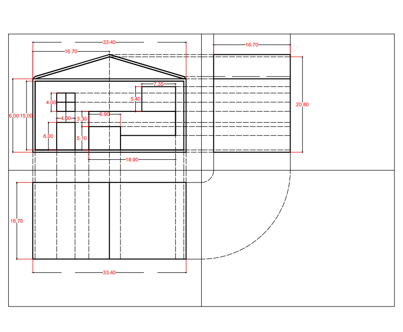
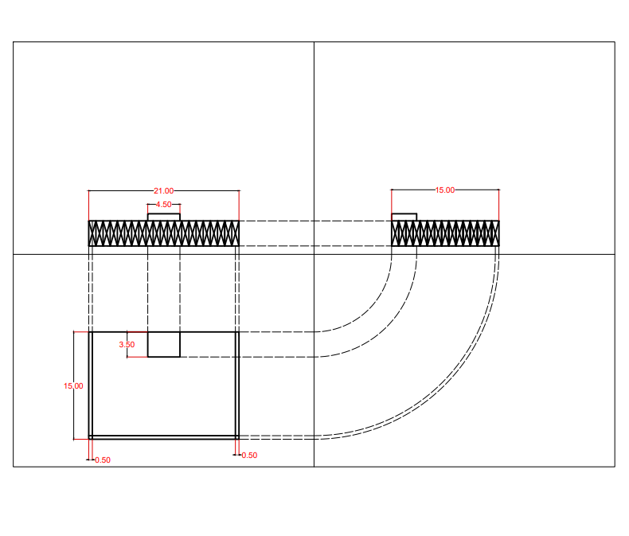

Introduzione
In questa parte della presentazione verrà illustrato il processo di creazione della casa e le principali fasi della sua progettazione.
La Progettazione


Disegno AUTOCAD
Mostra la disposizione in pianta della casa, e del giardino relativo
Ha consentito di stabilire con precisione ingombri, distanze reciproche e percorsi, fondamentali per orientare il fabbricato sul terreno e tracciare in cantiere i punti chiave per muri etc...
La Realizzazione


La Struttura
Mostra REALIZZAIONE del progetto
Questa casa è stata realizzata partendo da una struttura base in legno, ritagliata secondo il progetto e assemblata con regolatori, viti e colla a caldo. Successivamente è stata colorata per richiamare uno stile moderno e minimale.